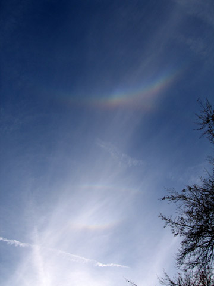
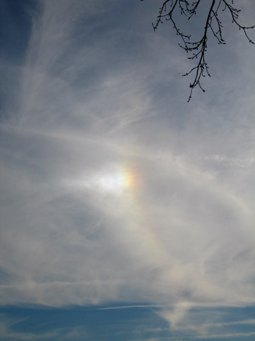

Halos, Arcs, and Sundogs
Earth's atmosphere normally drives us astronomers nuts, but it can sometimes be very beautiful. Brandon Aldinger took this series of pictures of a halo display on a Friday afternoon. They've been slightly contrast-enhanced. The contents, in his own words, are:
Haloes are produced by ice crystals in the highest cloud layers. Depending on the orientations, size, and uniformity of the crystals, you get different halos. The ones on Friday were pretty good. In the first image, can you spot 3 "rainbows"? (The sun is off the bottom of the image) The large "upside down rainbow" is called the circumzenithal arc. You can also see a small bit of a 46 degree halo attached to the CZA. The one closest to the bottom is called the "upper tangent arc", and the middle "rainbow" is a rare arc called a Parry Arc. It was really neat because it is pretty rare to see all of these arcs at once. Needless to say, I was very excited when I saw the display.
The second image is of the more common sundog along with a very weak 22 degree halo. You can see these at least once a week if you know what to look for.

